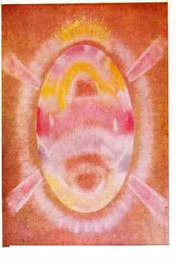
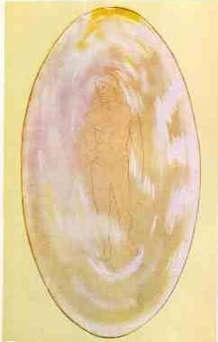
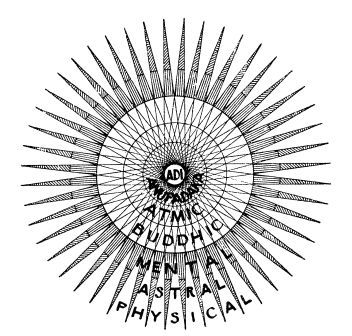
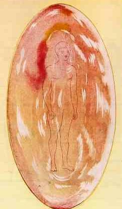

Spiritual body
 |
Also known as Karana Sarira(causal-seed body) or, Anandamayakosha
(bliss-joy sheath), Higher mind body, Ego, Causal body, Superconscious,
Soul, Buddhic body, Intuitional body. The Causal body consists of matter of the first, second and third
sub-planes of the mental plane. |
The vibrations thus aroused show themselves in the Causal body as
colours, so that, instead of being a mere transparent bubble, it gradually
becomes a sphere filled with matter of the most lovely and delicate hues, an
object beautiful beyond all conception.
The student will be familiar with the meaning of the various colours, from his
study of the same phenomenon in the astral [emotional] and mental bodies. Thus
pale rose expresses unselfish affection; yellow indicates high intellectual
power; blue betokens devotion; sympathy is expressed by green; and luminous
lilac-blue typifies the higher spirituality. These same colours in the denser
bodies are, of course, far less delicate and also less living.
Although in the course of his evolution in the lower worlds, a man often
introduces into his vehicles qualities which are undesirable, and entirely
inappropriate for his life as an Ego - such for example, as pride, irritability,
sensuality - yet none of these can be expressed in the Causal body.
Each section of the astral body acts strongly upon matter of the corresponding
mental sub-plane. Hence, as the coarser vibrations of the astral body are
expressed only in the lower [4] sub-planes of the astral world, they will affect
the Mental body only, not the Causal body.
The Causal body, therefore, is affected only by the three higher portions
of the astral body, and the vibrations in those portions represent only good
qualities.
The practical effect of this is that the man can build, into his Ego, that is,
into his true self, nothing but good qualities. The evil qualities which he
develops are, from the point of view of the Ego, only transitory, and must be
thrown aside as the man advances, because he no longer has within him matter
which can express them.13
 |
In the case of an average man, there is a distinct increase in the content of the great ovoid film. A certain amount of exceedingly delicate and ethereal colour now exists within it, though it is still less than half filled. Something of the higher intellect is visible, and something of the power of devotion and unselfish love. There is also a faint tint of that exceedingly delicate violet which indicates the capacity of love and devotion turned towards the highest ideal, and also a faint hint of the clear green of sympathy and compassion. As soon as the man begins to develop in spirituality, or even higher intellect, a change takes place. The real individual then begins to have a persisting character of his own, apart from that moulded in each of his personalities in turn by training, and by surrounding circumstances. this character shows itself in the size, colour, luminosity, and definiteness of the causal body, just as that of the personality shows itself in the mental body, except that the higher vehicle is naturally subtler and more beautiful. In the case of the spiritually developed man, an enormous change is noticed. the glorious iridescent film is now completely filled with the most lovely colours, typifying the higher forms of love, devotion and sympathy, aided by an intellect refined and spiritualised, and by aspirations reaching ever towards the divine. Some of these colours have no place in the physical spectrum.13 |

 |